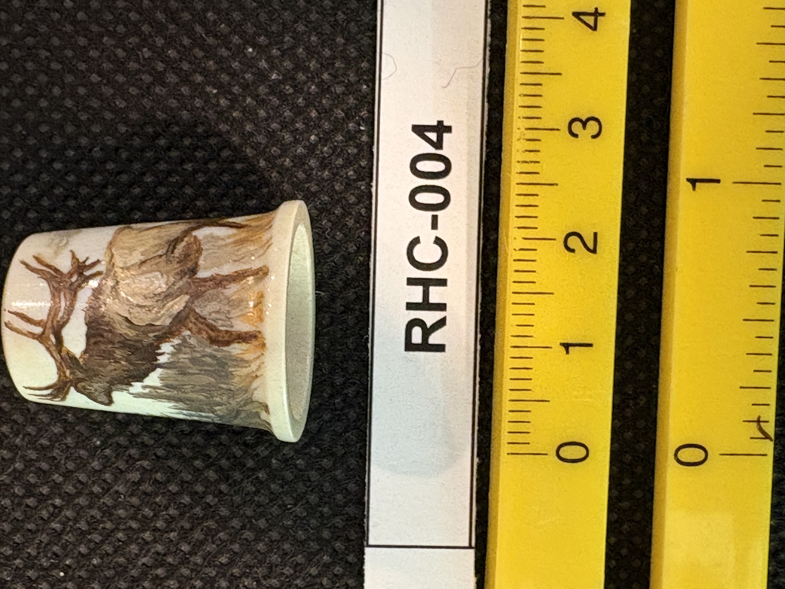
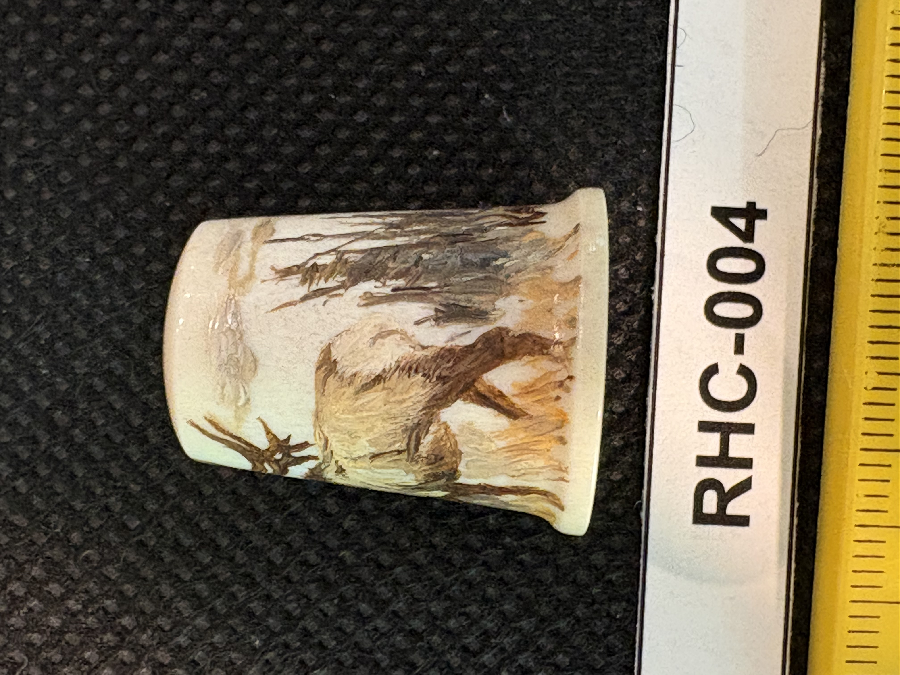
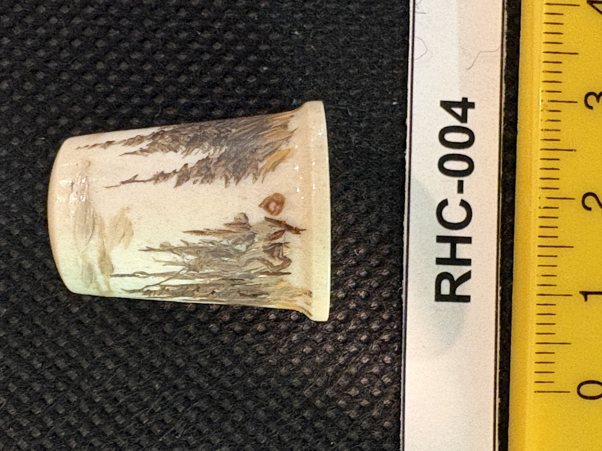

RHC-004 reviewed
Polychrome Scrimshaw Thimble, Bull Elk in Mountain Forest Scene



- Object Type
- Scrimshaw thimble
- Material
- Bone or ivory (presumed, not confirmed) — cream-white base material, small hollow tapered cone form typical of a thimble.
- Dimensions (cm)
- length: 2.3cm — Height (~2.3cm) measured off the cm scale; diameter not separately measured — ruler only runs along one axis in these photos.
- Subject Matter
- A bull elk with large antlers, depicted in a mountain/forest scene with tall grasses or brush and tree lines, wrapping most of the way around the exterior of the thimble.
- Artist Attribution
- unknown
- Date / Period
- Undated; no visible signature or date
- Mount / Display Stand
- Not mounted — photographed lying flat on the black fabric background next to the reference ruler, same as other items.
- Color / Technique
- Polychrome (multi-color) scrimshaw — brown, tan, and grey pigment washes used for the scene, distinct from the single-color black ink line engraving seen on RHC-001.
- Condition Notes
- Small stain/discoloration mark near the tree line in one photo (RHC-004-d); rim edge appears slightly uneven in places, possibly natural material edge or minor wear. Not physically examined.
- Distinguishing Features
- Very small scale (thimble-sized) fully-wrapped scrimshaw scene in polychrome — notably different technique and format from the larger engraved teeth in this collection.
- Legal / Regulatory Status
- Material not confirmed (bone vs. ivory) — if ivory/marine-mammal derived, same MMPA/ESA considerations as other items in this collection would apply, but unconfirmed. Flag for legal review before any loan/sale if material is later confirmed as regulated.
- Rights / Copyright
- No maker's mark or signature identified; copyright status of the painted scene undetermined.
- Keywords
- thimble scrimshaw polychrome elk mountain scene miniature
- Status
- reviewed
- Date Cataloged
- 2026-07-15
Open Research Questions
Research finding (phase 3, 2026-07-15): No maker attribution found for polychrome scrimshaw thimbles of this style via general web search; material confirmation (bone vs. ivory) remains a physical-inspection question.